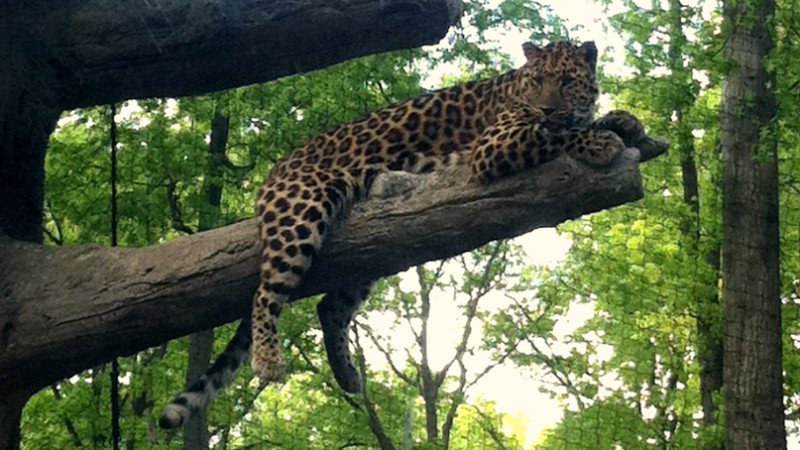
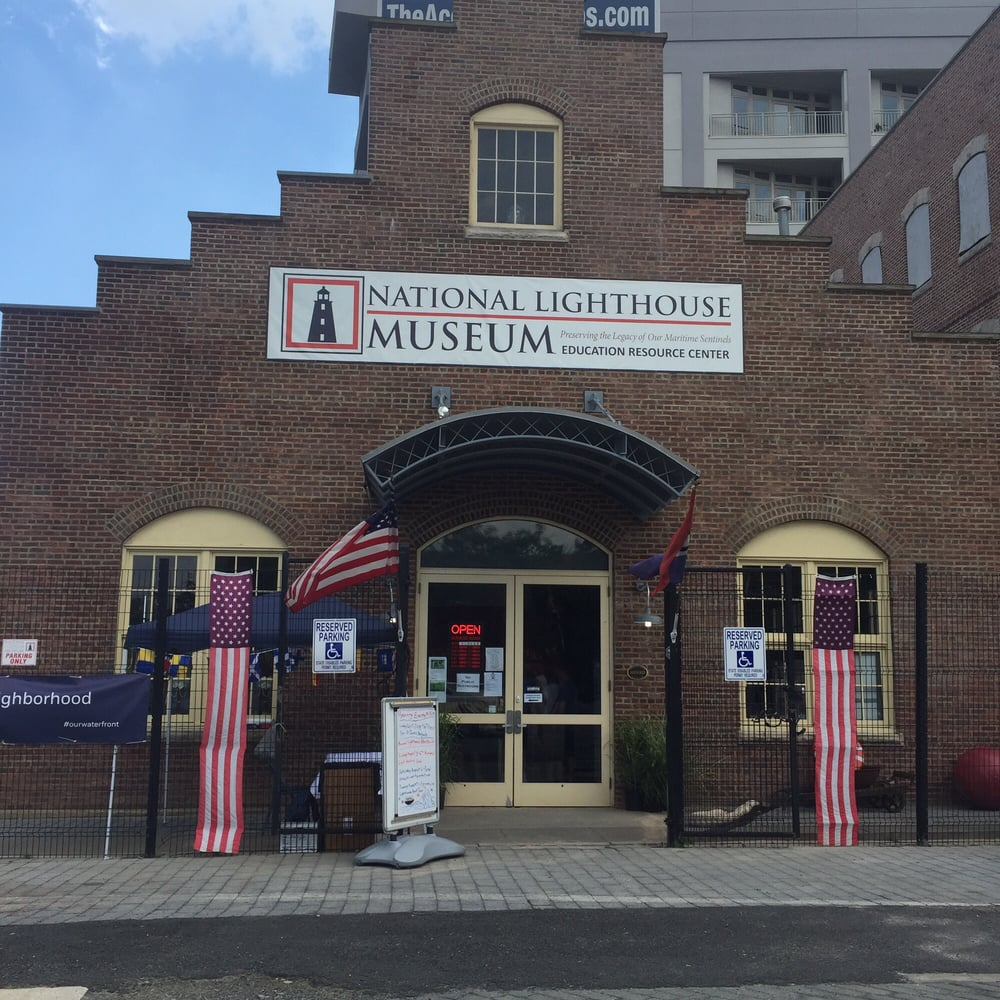
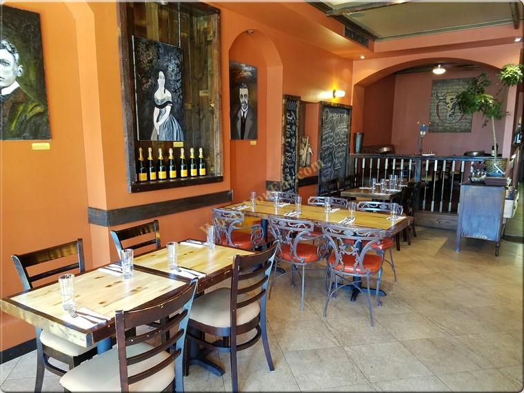

Parks
The Staten Island Zoo
The Staten Island Zoo is an 8-acre suburban zoo in West New Brighton, Staten Island, New York City. The zoo is open year-round except on Thanksgiving, Christmas, and New Year's Day. Plan a trip with the family. Visit The Staten Island Zoo.
Museum
National Lighthouse Museum
The National Lighthouse Museum, located in the St. George neighborhood of Staten Island New York City, United States, is a newly created museum dedicated to the history of lighthouses and their keepers. To learn more about the history of lighthouses, please visit The National Lighthouse Museum.
Restaurants
Korzo KlubKorzo Klub is a popular restaurant in Clifton, Staten Island, that serves up classic European dishes alongside unique, modern variations. One of their popular dishes is the deep-fried burger. Visit Korzo Klub today!